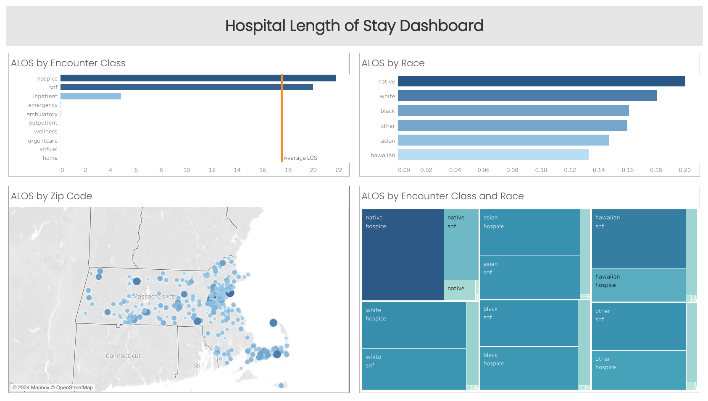

Hospital Length of Stay (ALOS) Analysis
Improving Healthcare Outcomes with SEPTEE and Donabedian's Model

Project Overview:
This project analyzes the Average Length of Stay (ALOS) by race, zip code, and encounter class in a hospital setting. The goal is to use SEPTEE (Safety, Efficiency, Patient-centeredness, Timeliness, Equity, Effectiveness) and Donabedian's model (structure, process, outcome) to identify areas for improvement in patient care and hospital efficiency. By visualizing this data through Tableau, actionable insights can be derived to address disparities and enhance patient care outcomes across different demographics and encounter classes.
Quick Insights:
- Hospice and Skilled Nursing Facility (SNF) Encounters have highest ALOS.
- Racial disparities in ALOS are inconclusive.
- Certain zip codes exhibit higher ALOS, indicating regional differences in healthcare access and quality.
Table of Contents
Data Sources:
Synthea Artifical Healthcare Data prepared by Josh Matlock of Data Wizardry
Tools
- PostgreSQL (data cleaning, entity resolution)
- Tableau (dashboard)
Data Cleaning and Preparation
- Checked for relevant NULLs: None
- Learned about several metrics important in adminstrative healthcare data
Exploratory Data Analysis
- What is the Average Length of Stay (ALOS)?
- Are there disparities in ALOS by Race?
- What regional differences exist based on Zip Codes?
- How does Encounter Class (emergency vs. scheduled) affect ALOS?
Data Analysis
Under the hood of visualization is an associated query in which we're essentially grouping dependent variables and ordering ALOS from greatest to least
Sample SQL Queries:
-- ALOS by Encounter Class
SELECT encounterclass
,AVG(EXTRACT(EPOCH FROM (stop - start)) / 86400) AS alos
FROM public.encounters
GROUP BY encounterclass
ORDER BY alos DESC;
-- ALOS by Race
SELECT p.race
,AVG(EXTRACT(EPOCH FROM (stop - start)) / 86400) AS alos
FROM public.encounters e
JOIN public.patients p
ON e.patient = p.id
GROUP BY race
ORDER BY alos DESC;
Results
Average Length of Stay is roughly 4 Hours and 12 minutes.
The analysis identified regional disparities in ALOS, while racial divides were inconclusive.
Emergency encounters, as expected, had a higher ALOS compared to scheduled admissions, with Hospice and SNF care having the highest ALOS of nearly 22 and 20 days, respectively.
Recommendations
- Investigate possible racial and regional disparities (SEPTEE focus on equity).
- Reduce ALOS by improving care coordination and discharge planning, improving Process Measures.
- Increase efficiency and focus on patient-centered care by improving Structure Measures (staffing, training).
Limitations
Synthetic Data:
While the Synthea dataset is modelled from existing relationships, it is synthetic data
References
Tableau Dashboard with all of the visualizations
Here is an overview of Donabedian's Model of Healthcare Quality Measures
Six Domains of Healthcare Quality, originally developed in Crossing the Quality Chasm: A New Health System for the 21st Century from The Institute of Medicine (IOM)